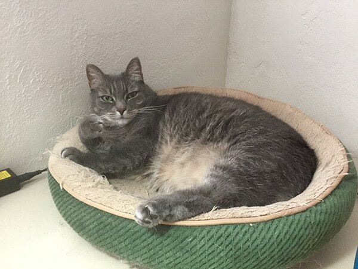
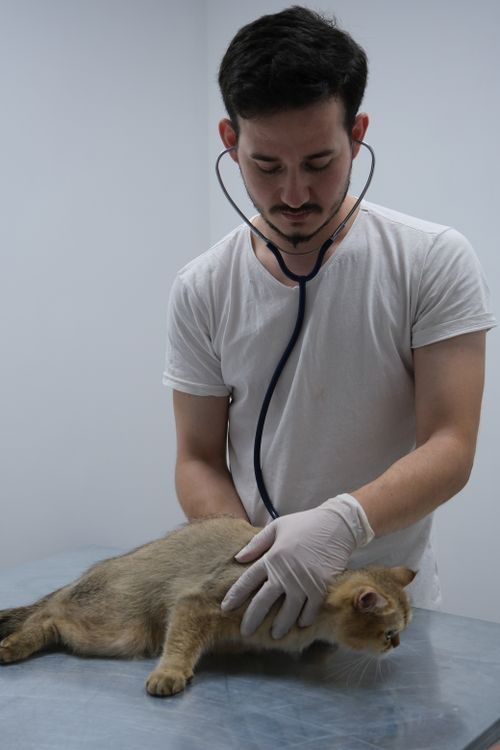
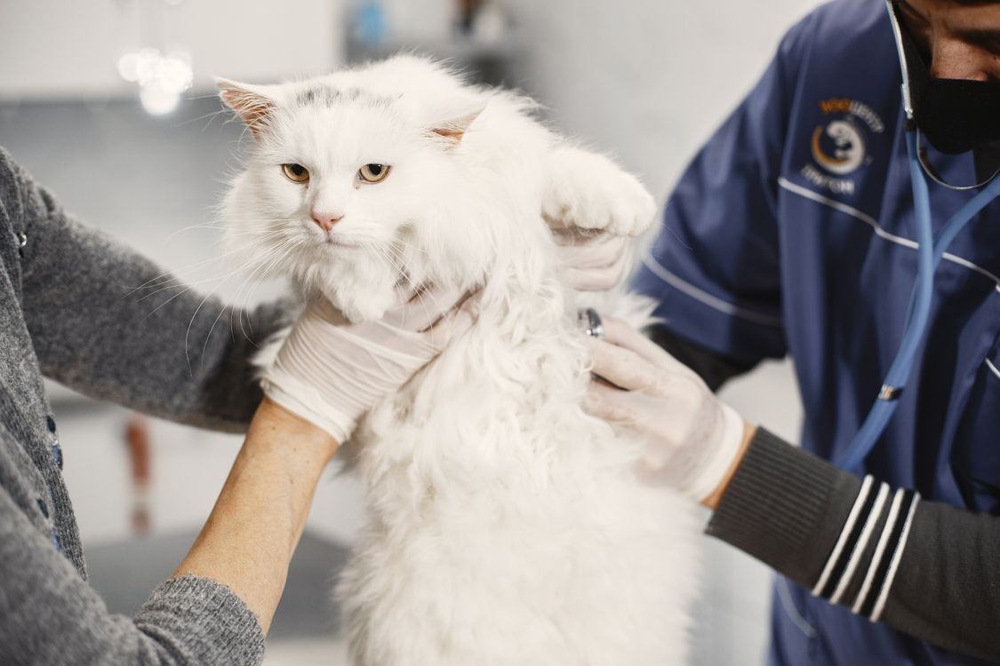

Design Preview: this is a concept website created by Freightfolio to show what a new website for this business could look like. It is not the business's live website.
CatCare
Eugene, Oregon. Cats only.

Every service below is for cats only. Two doctors focus exclusively on feline medicine.
A grey cat resting in a cat bed. Photo from the business website, catcareeugene.com.
Feline wellness exams.
Vaccinations given as part of routine feline care.
Diagnostics using labwork and radiology to find what is wrong.
Dental care for cats, including extractions.
Spay and neuter surgery for cats.
Diet and behavior management for cats.
Ongoing diabetes management for cats living with the condition.
Care for senior cats.
Acupuncture and aquapuncture offered as part of feline care.
Prescription diets and flea and tick prevention.
No service prices are published on the clinic's own site, and there is no online booking there, so this concept uses phone contact only. The clinic's own site links to a third-party pharmacy for prescriptions.


The grey cat photo above is from the business website. The two photos in this gallery are stock photos, not photos of this business.